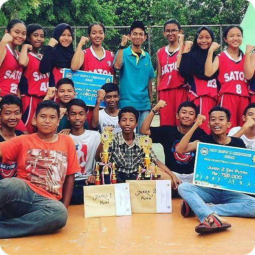
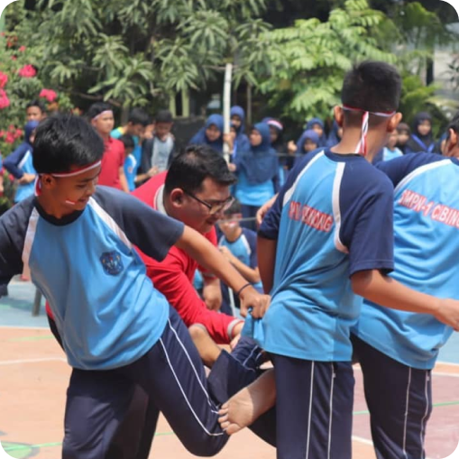
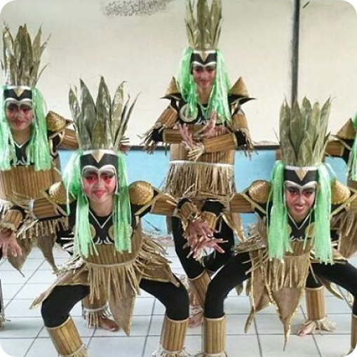
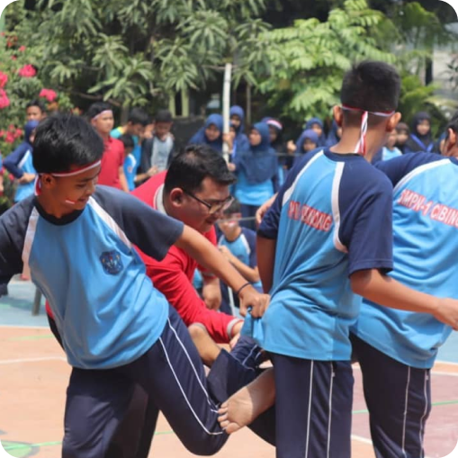
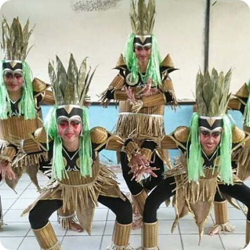
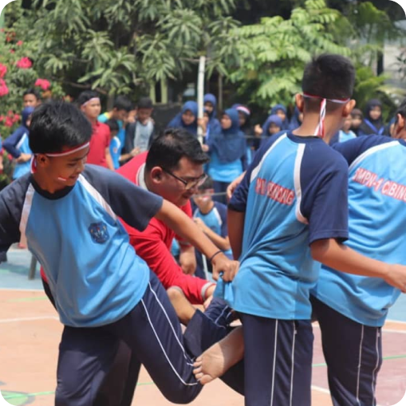
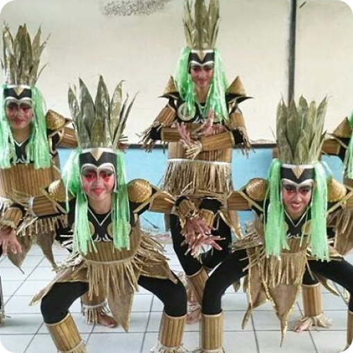

Selamat Datang di SMP Negeri 1 Cibinong
Tempat Berkembang dan Belajar Bersama!, bukan hanya berfokus pada prestasi akademik, tetapi juga pada pengembangan karakter, kreativitas, dan keterampilan hidup.
Visi
Terwujudnya SMPN 1 Cibinong sebagai lembaga yang menghasilkan generasi bertaqwa, berprestasi, bertaqwa, berkeadaban serta berwawasan lingkungan dan teknologi.
Misi
1.Mengoptimalkan proses pembelajaran dan bimbingan terhadap peserta didik. 2.Melatih dan mengembangkan minat dan bakat berdasarkan potensi peserta didik. 3.Mengembangkan potensi Guru dan Pegawai. 4.Memenuhi sarana dan prasarana yang dibutuhkan. dalam mengembangkan potensi. 5.Berdoa sebelum dan sesudah KBM, sholat berjamaah, berinfaq dan shodaqoh.
Gallery

 




